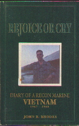

George's Recommended Reading
From an earlier version of the association's website, saved 17 October 2002.
Click On The Book Icons To Purchase
Books Are Listed In Alpha Order
"A Fellowship Of Valor"
The Battle History of the U.S. Marines, 1997
Col. Joseph H. Alexander, USMC Ret.
The Battle History of the U.S. Marines is the only single-volume, definitive combat history of the United States Marines, covering more than two centuries of battles in the air and on land and sea--literally "from the Halls of Montezuma to the shores of Tripoli," from Suribachi to Somalia. It presents graphic narratives of such epic engagements as Belleau Wood, Wake Island, Guadalcanal, Tarawa, Peleliu, Saipan, Okinawa, the Chosin Reservoir, Khe Sanh, and many more.
"Almost A Hero" James J. Dalton, II with P.J. Renfroe, 2000
"Their first mistake when sending out to destroy Jacob Reynolds was forgetting that "Once a Marine, always a Marine". Their second mistake was not realizing that once fear of death has been faced, new terrors serve only as aphrodisiacs." This book, although a work of fiction, is a worthy read. The author Jim Dalton was a pilot with HMM 265 and was a co-pilot with John House during the extraction of Team Hawk. This book is a very good read and is deserving to be placed on this bookshelf.
"Bonnie-Sue"
A Marine Helicopter Squadron In Vietnam by Marion F. Sturkey, 2000
Marion Sturkey was a Helicopter Pilot in HMM265. This is a wonderful book detailing the war in Northern I Corps, from the beginning in July 1966 through the siege of Khe Sanh. It is written in a perspective of the history of HMM-265 during that time frame. Sturkey does a remarkable job of giving the reader the feeling he is riding in the helicopter during the many Infantry operations and Recon Insertions and Extractions
"China And The Vietnam Wars, 1950 1975" Qiang Zhai, 2000
"Flags Of Our Fathers" James Bradley, 2000
The Battle of Iwo Jima, fought in the winter of 1945 on a rocky island south of Japan, brought a ferocious slice of hell to earth: in a month's time, more than 22,000 Japanese soldiers would die defending a patch of ground a third the size of Manhattan, while nearly 26,000 Americans fell taking it from them. The battle was a turning point in the war in the Pacific, and it produced one of World War II's enduring images: a photograph of six soldiers raising an American flag on the flank of Mount Suribachi, the island's commanding high point.
One of those young Americans was John Bradley, a Navy corpsman who a few days before had braved enemy mortar and machine-gun fire to administer first aid to a wounded Marine and then drag him to safety. For this act of heroism Bradley would receive the Navy Cross, an award second only to the Medal of Honor.
Bradley, who died in 1994, never mentioned his feat to his family. Only after his death did Bradley's son James begin to piece together the facts of his father's heroism, which was but one of countless acts of sacrifice made by the young men who fought at Iwo Jima. Flags of Our Fathers recounts the sometimes tragic life stories of the six men who raised the flag that February day--one an Arizona Indian who would die following an alcohol-soaked brawl, another a Kentucky hillbilly, still another a Pennsylvania steel-mill worker--and who became reluctant heroes in the bargain. A strongly felt and well-written entry in a spate of recent books on World War II, Flags gives a you-are-there depiction of that conflict's horrible arenas--and a moving homage to the men whom fate brought there. --Gregory McNamee
(photograph not available) "Hell In A Very Small Place" The Siege Of Dien Bien Phu by Bernard Fall
The definitive history of the defeat of the French during the First Indochina War. This masterly work exposes early US Involvement in Vietnam. It is a must read for any serious student of the Vietnam War.
"Honor The Warrior"
The United States Marine Corps in Vietnam William L. Myers, 2000
Billy Myers has captured a litany of accounts that describes in vivid detail acts of valor and gallantry in action. The reader will also experience the horror of war as the pages turn. At the same time it heightens the awareness of the sacrifices made and endured by those that died and bleed, in a war that continues to live in the memories of those that served. It is written in mainly first person accounts either written contemporaneous to the events or from today's memories. It also contains a listing the recipients of the Medal Of Honor and Navy Cross. The Silver Star listing, although missing a few names is the most complete listing ever compiled.
"Iwo Jima" - Legacy Of Valor
Bill D. Ross, 1986
George: You probably do not know it, but my family previously owned Vanguard Press. We published a book on Iwo written by Bill Ross called, not unexpectedly, "IWO JIMA". Bill was a former Marine and researched the living hell out of Iwo in order to write the book. If I remember right, he also personally attended. I don't have the book anymore, but when I read it I could not put it down. Not only did we lose many lives, but so did the Japanese. In fact, If I recall correctly, they lost over 21,000 people and there were only a handful left alive when the fighting ended. There were something like 21 Medals Of Honor that came out of that Island battle. Bill tells the stories behind most of them. I highly recommend the book and look forward to any feedback if anyone reads it. My mother helped edit the original script and met with the commandant of the corps in order assure accuracy so I feel like I have a little personal involvment myself. Bill Ross was a great guy and I think he died a few years ago, but I really am not sure.
"Last Reflections On A War"
Bernard B. Fall's last Comments on Vietnam, 2000
Bernard B. Fall was 40 years old when he was killed by a booby trap in northern South Vietnam on February 21, 1967. By the time of his death he had already authored seven books on Vietnam, most notably Street Without Joy (0-8117-1700-3), an indictment of French intrusion into Indochina and a warning to American forces just beginning their involvement. Last Reflections on a War, first published shortly after Dr. Fall's death, is a tribute to his life's work: It contains the only known autobiographical account of his life, several previously unpublished articles, notes for "Street Without Joy Revisited," and transcripts of Dr. Fall's tape recordings, including his last recorded words.
"Marine Helo"
Helicopter War In Vietnam With the U.S. Marine Corps by David M. Petteys, 1995.
David Petteys was a Helicopter Pilot in HMM-165 and HMM-265 (66-67). This book, as the author describes as a distillation of his letters home, is a must read. Not only does it record the authors tour in Vietnam as a Helo Squadron member it also describes in vidid detail many of the missions. In particular interest are the many accounts of recon insertions and extractions by date. Petteys describes the extraction of Recon Team Hawk - 25 April 67; Team Breaker- 11 May 67(from exact same LZ); and Team Striker - 30 June 67. In the authors forward he states "I wish to dedicate this book to all the Armed Service personnel who served in Vietnam, especially the US Marine Corps, of which I am proud to have been part. The book may seem critical of Marine leadership at times. But I ask the reader to look at the historical context. This book is one person's accounting of the daily mental atmosphere in that time and place, warts and all."
"Never Without Heroes"
Marine Third Reconnaissance Battalion in Vietnam, 1965-70 Lawrence C. Vetter, Jr., 1996
FOUR CONGRESSIONAL MEDALS OF HONOR, THIRTEEN NAVY CROSSES, SEVENTY-TWO SILVER STARS. It's all here-grueling, tense, and deadly recon patrols, inserts directly into NVA base-camps, last-stand defenses, self-sacrifice, and bravery. This book is the only history of a Marine Reconnaissance Battalion in Vietnam for the entire length of its commitment there. Contains an eight-page photo insert.

Diary of a Recon Marine, Vietnam 1967-68 John R. Rhodes, 1996
In 1967, Pvt. John R. Rhodes was a Marine serving with 3rd Recon Battalion in Vietnam. In this memoir, he documents through his personal diary, the story of one individual's tour of duty. Rhodes's vivid description of what it was like to be part of the Marine Corps Elite is an engrossing portrait.
"The Blood Road"
The Ho Chi Minh Trail and the Vietnam War, John Prados, 1999
"The Trail undeniably lay at the heart of the war," writes John Prados in the introduction to The Blood Road. The Vietnam War cannot be understood properly without considering this elusive path from North Vietnam to South Vietnam, which helped the Viet Cong defeat the armed forces of a much more powerful country. "Building the Trail or hiking it became the central experience for a generation of Vietnamese from the North," says Prados. The Trail--known as the Truong Son Strategic Supply Route to the Communists and as the Ho Chi Minh Trail to the Americans--was composed of more than 12,000 miles of roads and paths, and it remained open throughout the course of the conflict despite American efforts to close it. When the Nixon administration ordered attacks on Cambodia and Laos, the goal was to destroy the Trail and its supply depots. Prados suggests that the result of the Vietnam War might have been different if the United States had somehow managed to shut down the Trail, even though he also acknowledges the extreme difficulty of succeeding at this task. The Blood Road offers a fresh look at an old debate, and marks a welcome contribution to the literature on the Vietnam War. --John J. Miller
"Stolen Valor"
How the Vietnam Generation Was Robbed of its Heroes and its History
B.G. Burkett and Glenna Whitley, 1998
"Hard-nosed, provocative, and courageous, 'Stolen Valor' masterfully and on occasion gleefully debunks some of the popular canards and much of the anecdotal record about Vietnam veterans...For me, a reporter who is also a Vietnam veteran, 'Stolen Valor' goes on the shelf somewhere near Neil Sheehan's 'A Bright Shining Lie,' David Halberstam's 'The Best and the Brightest,' and a few other books whose lasting value is that they make more comprehensible some of the epic complexities of Vietnam, which was the central cultural event of my generation." -- Joe Sharkey, in The Weekly Standard
"We Were Soldiers Once...And Young Lt.Gen. Harold G. Moore and Joseph Galloway, 1992
Forthcoming Movie In Production starring Mel Gibson
In the first significant engagement between American troops and the Viet Cong, 450 U.S. soldiers found themselves surrounded and outnumbered by their enemy. This book tells the story of how they battled between October 23 and November 26, 1965. Its prose is gritty, not artful, delivering a powerful punch of here-and-now descriptions that could only have been written by people actually on the scene. In fact, they were: Harold Moore commanded the men of the 1st Battalion, 7th Cavalry, who did most of the fighting, and Joseph Galloway was the only reporter present throughout the battle's 34 harrowing days. We Were Soldiers Once... combines their memories with more than 100 in-depth interviews with survivors on both sides. The Battle of Ia Drang also highlights a technological advance that would play an enormous role in the rest of the war: this was perhaps the first place where helicopter-based, air-mobile operations demonstrated their combat potential. At bottom, however, this is a tale of heroes and heroism, some acts writ large, others probably forgotten but for this telling. It was a bestseller when first published, and remains one of the better books available on combat during the Vietnam War. --John J. Miller